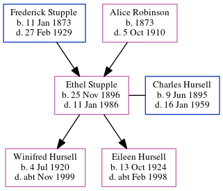

Ethel Mary Alice Hursell (née Stupple) 1896 - 1986
[ Home ] | [ Calendar ] | [ Surnames Index ] | [ Census Index ] | [ Family History ]The child of Frederick Stupple (a bootmaker and repairer) and Alice Robinson, Ethel Stupple, the second cousin twice-removed on the mother's side of Nigel Horne, was born in Herne Bay, Kent, England on Nov 25, 18961,2,3,4, was baptized there at Christ Church on Apr 16, 1897 and married Charles Hursell (a railroad engine-driver with whom she had 2 children: Winifred Elsie and Eileen Frances) in West Ashford, Kent, England around Feb 19205.
During her life, she was living at North Street in Herne Bay on Mar 31, 19011; at 22 Underdown Street in Herne Bay on Apr 2, 19116; and at Station House Cottage, Wye, Kent on Sep 29, 19392.
She died on Jan 11, 1986 in Ashford, Kent, England4.
Parents
- Frederick was born on Jan 11, 1873
- Alice Mary was born in 1873
Children
- Winifred Elsie was born on Jul 4, 1920
- Eileen Frances was born on Oct 13, 1924
Citations
- 1901 England, Wales & Scotland Census - Findmypast (was age 4 and the daughter of the head of the household)
- 1939 Register - Findmypast (was the wife of the head of the household)
- England & Wales births 1837-2006 - Findmypast
- England & Wales deaths 1837-2007 - Findmypast
- England & Wales Marriages 1837-2005 - Findmypast
- 1911 Census for England & Wales - Findmypast (was age 14 and the daughter of the head of the household)
Media
England & Wales births 1837-2006 - BMD/B/1896/4/AZ/000568/164
1911 Census for England & Wales - GBC/1911/RG14/04357/0059/2
England & Wales deaths 1837-2007 - BMD/D/1986/1/75597182
1939 Register - TNA/R39/1817/1817D/019/01
Kent, Canterbury Archdeaconry Baptisms - GBPRS-CANT-B-96678711
England & Wales Marriages 1837-2005 - BMD-M-1920-1-AZ-001012-135
Family Tree
Generated by ged2site. Last updated on Jun 11, 2024